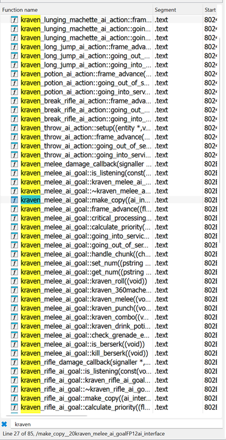
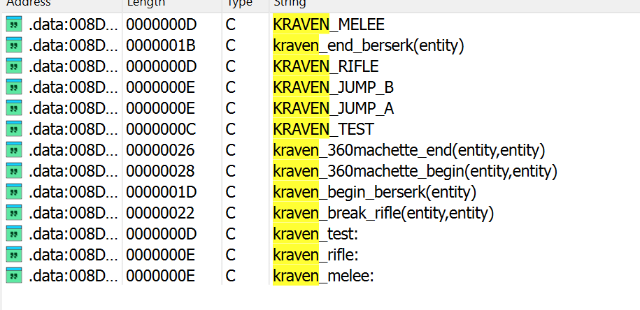
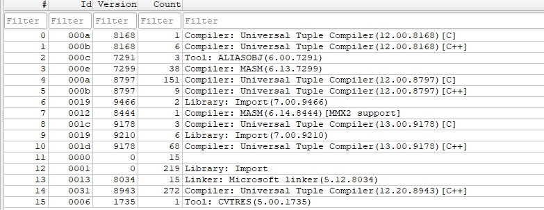
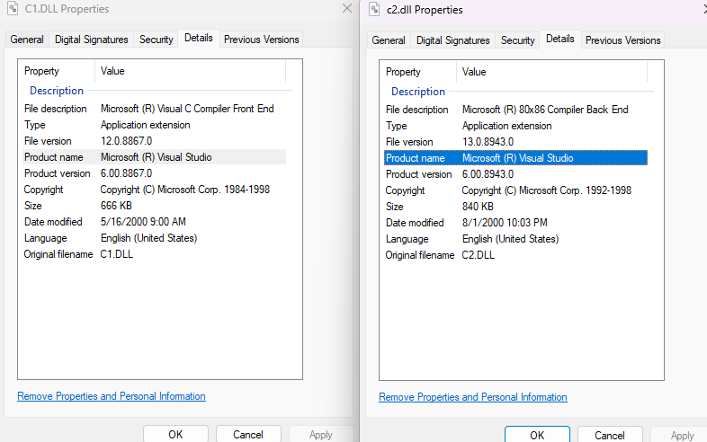
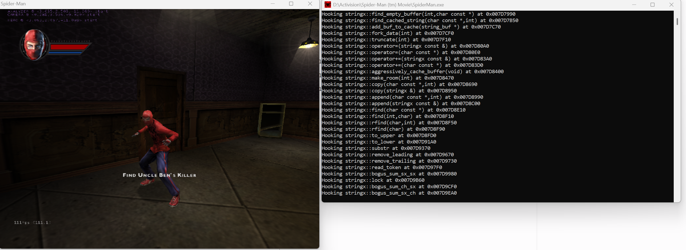

Spider-Man: The Movie Game dissection project - Introduction
This post covers my experience of starting a dissection (thin decompilation) project for Spider-Man: The Movie Game, namely the PC Port. It's also meant for anyone that wants to learn the intricacies of decompiling binaries targeting Windows NT, such as identifying the compiler version through the undocumented PE Rich Header and how to manage multiple Visual Studio versions.
Context
This game is a perfect storm for this type of project. Firstly, the Japanese GameCube version has symbols and the source code of Kelly Slater's Pro Surfer, which runs on the same engine, has been public for a while. Both of these considerably lower the bar for a decompilation project.
There's also a set of levels involving Kraven The Hunter that are exclusive to the Xbox version, but the game code for the character exists in all versions.
Here are the functions on GameCube version: 
Here's the game script code for the PC version: 
Finally, the PC version has two patches, 1.1 and 1.3. According to online discussions, only the last one is actually usable but it also downgrades a couple features, such as playing as Mary Jane and changing the save file format (previous versions are not compatible). Even with the latest patch the game is buggy on modern systems when playing cutscenes, it'll either crash, play audio with no video, or play inside a tiny square in the middle of your screen.
Basically, what I'm saying is that there's a lot of things that make this game interesting: it's easier to decompile, there's artificially locked out content and the game still needs fixes.
Dissection, not decompilation
I want to make this distinction clear. The reason why I call this project a dissection is because I only intend to decompile the game partially, namely the engine. Personally, game logic is not what I'm after therefore I plan to leave that untouched. The goal is to expose core components such as the game's virtual machine, file loading and rendering.
Ideally, it would look like how Beenox shipped their Spider-Man games, in two modules - GoliathEngine the engine and GameLogic which contains all the game logic.
Identifying the compiler through PE's Rich Header
Windows Executables aka Portable Executables (PE) contain a secret section between the DOS Header and the PE Header which has been dubbed the Rich Header. The name comes from the fact it contains the string "Rich".
The reason why it's a secret header is because Microsoft never documented it and if you parse a Portable Executable according to the documentation you'd never see it. The DOS Header contains an offset to the PE Header - e_lfanew - which is why the Rich Header can fit between the two.
In this header you find an array of tuples containing the products used and how many files it interacted with. Here's the header for the game:

As a rule of thumb, the compiler version with highest number of items is the one used by the developer. The reason there's such a variety of versions is because you're linking against libraries (mostly standard ones) that are not necessarily recompiled when the compiler version changes.
To parse and view the Rich Header I used Detect It Easy, it's basically a swiss-army knife to get information from binaries. Important to note, don't be fooled by the compiler version it says when you do a scan, because as of version 3.11 it picks the highest version present in the Rich Header which can be wrong.
From experience, those high versions come from linking against DirectX. It seems internally Microsoft was already dogfooding its next-gen compilers and thus their IDs show in the Rich Header.
Finding the proper Visual Studio version
The most used developer environment on Windows is Visual Studio and the compiler comes bundled with it. So which version of Visual Studio 6 comes with the C++ compiler version 8943? For that I relied on the help of the user tomsons26 from the decomp.me Discord Server. He shared his personal list of product IDs and the matching visual studio version - gist.
According to the list, version 8943 comes with Visual Studio 6.0 Service Pack 4 + Processor Pack. Finding Visual Studio 6.0 base installation and Service Pack 4 was easy, both are available on the Internet Archive - here and here.
The problem was finding the processor pack. I could only find the one for Service Pack 5 (yes, they're tied to the pack version). The user Mathias from the same discord server pointed me to the historical Processor Pack page on the Microsoft's website. There was a note describing how it was originally bundled with the Service Pack 4 CD... and somehow I had missed it. There was an installer inside a directory called PP. Sadly it was the wrong version, 8876 instead of 8943.
I took another look at the page and indeed it mentioned the BETA version bundled with the CD was buggy. I looked into other Service Pack 4 CDs but no luck. I asked on the server and the user pool7 did have an Internet Archive link. Later, tomsons26 explained that it was distributed digitally which explains why I couldn't find physical copies. I also learned that you can look into the Details tab of C1.DLL and C2.DLL to get the compiler version of the C and C++ compilers respectively, without needing to build.

Moral of the story? If you plan to do a decomp join a decomp community. Also I highly recommend a Windows XP virtual machine to install these things and then copy the files over. The installers can be quite finicky.
Visual Studio 6.0 version clash
The first time I built a project using a different version of Visual Studio 6.0 and checked the executable Rich Header I was confused. It was showing an older version, but I recognized it. It was the same compiler version I use on my other decompilation project - spidey-decomp and latest blog post -, somehow the IDE was picking up the compiler for that toolchain. To validate my theory I used procmon, which lets me monitor system calls across the whole system.
There was nothing on my environment variables, so I started to look into the registry and that's when I found HKEY_CURRENT_USER\Software\Microsoft\DevStudio\6.0\Build System\Components\Platforms\Win32 (x86)\Directories. The keys Path Dirs, Include Dirs Library Dirs and Source Dirs are the ones influencing this behavior. In the end, I created two reg files with the setup for both projects, which I must run every time I switch. tomsons26 also taught me that I can alternatively run VCVARS32.bat, which sets up the developer environment on the terminal, and start MSDEV with the flag /USEENV.
First milestone
For a proper proof-of-concept I wanted to completely replace a core component of the engine. The target was set to stringx, the custom string implementation of the engine. Copying the code from Kelly Slater's was not enough, I manually checked all of the functions. A great thing about Microsoft's compiler is that the order of the functions in the source file matches the order in the binary.
Thanks to checking neighbouring functions I found one extra function that seems to only be present in the PC version - here - and was reassured I didn't miss anything. Also found out that the cache sizes for the strings were different. There were other differences, but they're so minor it'd be quite boring to cover, if you're interested I'd recommend to search for @Patch and read the notes I left.
Hooking troubles
C++ rules are stricter when it comes to pointers, unlike in C where you can cast everything to void* and be happy. Regular functions can be casted just fine but member functions that's where the problem is. This was annoying because I wanted to pass a function pointer of "my" stringx implementation to a function to properly hook into the game. I had the following macro PATCH_PUSH_RET(addr, dest) - addr is the address of the function in the game and dest is the pointer to my implementation - you'd use it as such PATCH_PUSH_RET(0x12345678, stringx::remove_trailing).
Initial implementation:
#define PATCH_PUSH_RET(addr, dest) {\
unsigned char *tmp = (unsigned char*)(addr);\
tmp[0] = 0x68;\
*(int*)&tmp[1] = dest;\
tmp[5] = 0xC3;\
puts("Hooking " #dest " at " #addr);\
}
The compiler didn't like the member function pointer was treated as something other than a member function pointer. I had dealt with something similar in my other decomp project so here's the solution:
static inline int* get_thunk_address(void* first,...)
{
va_list args;
va_start(args, first);
int* res = va_arg(args, int*);
va_end(args);
return res;
}
#define PATCH_PUSH_RET(addr, dest) {\
unsigned char *tmp = (unsigned char*)(addr);\
tmp[0] = 0x68;\
*(int**)&tmp[1] = get_thunk_address(0, dest);\
tmp[5] = 0xC3;\
puts("Hooking " #dest " at " #addr);\
}
The trick is to create a variable argument function and yonk the value from the list. It works perfectly and the assembly it generates is quite small (just copying the value of second argument to eax). So even though the code is ugly it's quite elegant.
My troubles were not over just yet. This didn't work with protected functions or with polymorphic functions. How would the compiler know from stringx::copy that I was referring to stringx::copy(const char*, int) and not stringx::copy(stringx&)?
The solution was much easier and more convenient than I expected. I export ALL of the functions of my project, since it's easier to find them in disassembly and also opens the door for automatically comparing binaries. The solution was to get their address via GetProcAddress.
extern HMODULE bink_dll; // set on DLL load
#define PATCH_PUSH_RET_POLY(addr, dest, func_mangled) {\
unsigned char *tmp = (unsigned char*)(addr);\
tmp[0] = 0x68;\
*(int**)&tmp[1] = (int*)GetProcAddress(bink_dll, func_mangled);\
tmp[5] = 0xC3;\
puts("Hooking " #dest " at " #addr);\
}
The parameters had to be changed since now I needed the mangled names - PATCH_PUSH_RET_POLY(0x007D8690, stringx::copy(char const *,int), "?copy@stringx@@QAEXPBDH@Z").
The last challenge was to hook the header defined operator functions that were also marked with inline.
friend stringx operator+( const stringx& lhs, const stringx& rhs );
friend stringx operator+( const char* lhs, const stringx& rhs );
friend stringx operator+( const stringx& lhs, const char* rhs );
inline stringx operator+( const stringx& lhs, const stringx& rhs )
{
// removed
}
inline stringx operator+( const char* lhs, const stringx& rhs )
{
// removed
}
inline stringx operator+( const stringx& lhs, const char* rhs )
{
// removed
}
For unknown reasons, they all got materialized in the PC version and I couldn't export them without getting bizarre compilation errors. My solution for this was to define bogus functions that invoke the operators.
stringx stringx::bogus_sum_sx_sx(const stringx& lhs, const stringx& rhs)
{
return lhs + rhs;
}
stringx stringx::bogus_sum_ch_sx( const char* lhs, const stringx& rhs )
{
return lhs + rhs;
}
stringx stringx::bogus_sum_sx_ch( const stringx& lhs, const char* rhs )
{
return lhs + rhs;
}
After hooking all functions, it was finally time to check the game, but it crashed...
Debugging the crash
It was so relieving when I attached x64dbg and the crash was not related to an invalid memory access. The stack pointer was misaligned so when it hit the RET instruction it was going to the middle of nowhere. By single stepping I was able to figure out the culprit, it was stringx::bogus_sum_sx_ch. The bogus function was clearing the stack when it shouldn't, that's because by default member functions are __thiscall which per the ABI is callee's responsibility to clean the stack. I had forgotten to mark them as static and after that they become __cdecl and the crashes stop :)

Closing word
If you'd like to contribute or test the project check out the repository and if you'd like to see how progress looks like in realtime, I livestream it on YouTube.